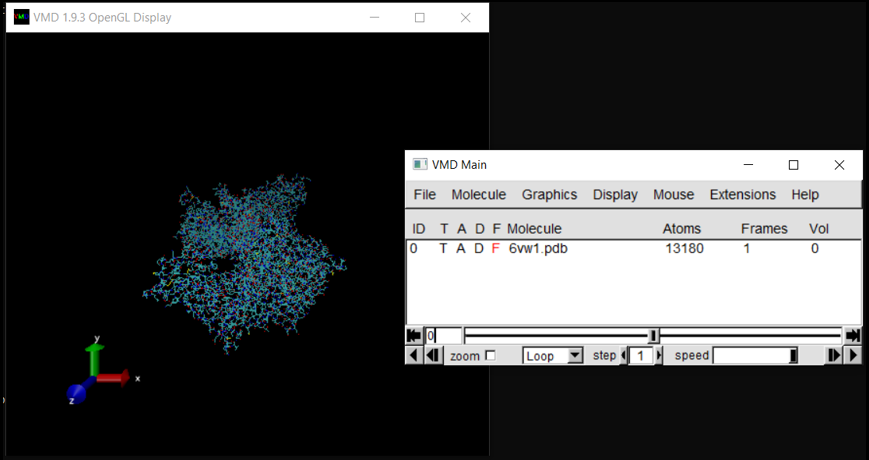
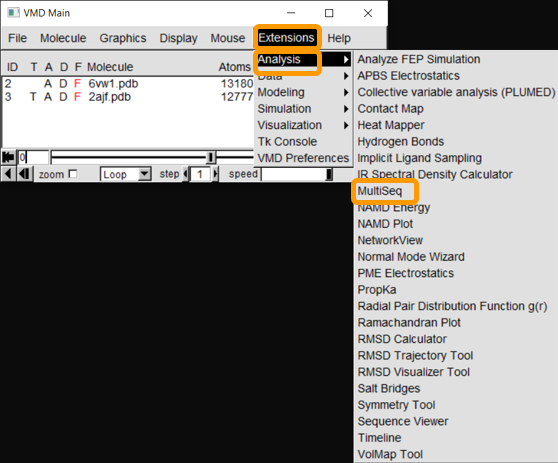
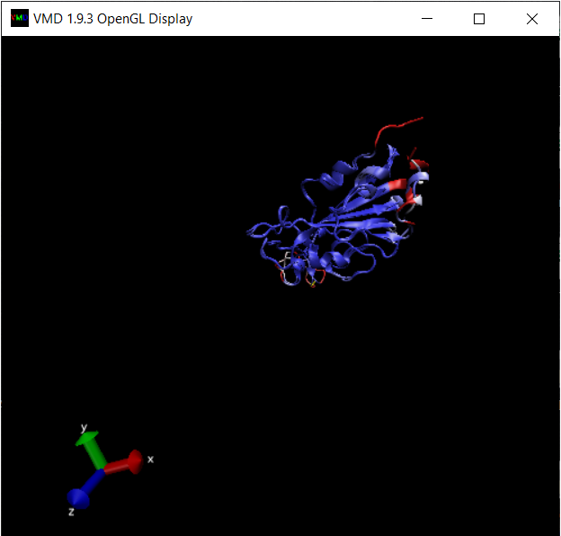

Software Tutorial: Finding Local Differences in Two Protein Structures
In this tutorial, we will get started with VMD and then calculate Qres between the SARS-CoV-2 RBD (PDB entry: 6vw1) and SARS-CoV RBD (PDB entry: 2ajf) using the VMD plugin Multiseq. By locating regions with low Qres, we can hopefully identify regions of structural differences between the two RBDs.
Multiseq aligns two protein structures using a tool called Structural Alignment of Multiple Proteins (STAMP). Much like the Kabsch algorithm considered in part 1 of the module, STAMP minimizes the distance between alpha carbons of the aligned residues for each protein or molecule by applying rotations and translations. If the structures do not have common structures, then STAMP will fail. For more details on the algorithm used by STAMP, click here.
Getting started
For this tutorial, first download VMD. Throughout this tutorial, the program may prompt you to download additional protein database information, which you should accept.
We will need to download the .pdb files for 6vw1 and 2ajf. Visit the 6vw1 and 2ajf PDB pages. For each protein, click on Download Files and select PDB Format. The following figure shows this for 6vw1.

Aligning the RBD regions of two spike proteins
Next, launch VMD, which will open three windows. We will not use VMD.exe, the console window, in this tutorial. We will load molecules and change visualizations in VMD Main. Finally, we will use OpenGL Display to display our visualizations.
We will first load the SARS-CoV-2 RBD (6vw1) into VMD. In VMD Main, go to File > New Molecule. Click on Browse, select your downloaded file (6vw1.pdb) and click Load.


The molecule should now be listed in VMD Main, with its visualization in OpenGL Display.

In the OpenGL Display window, you can click and drag the molecule to change its orientation. Pressing ‘r’ on your keyboard allows you to rotate the molecule, pressing ‘t’ allows you to translate the molecule, and pressing ‘s’ allows you to enlarge or shrink the molecule (or you can use your mouse’s scroll wheel). Note that left click and right click have different actions.
We now will need to load the SARS-CoV RBD (2ajf). Repeat the above steps for 2ajf.pdb.
After both molecules are loaded into VMD, start up Multiseq by clicking on Extensions > Analysis > Multiseq.

You will see all the chains listed out per file. Both PDB files contain two biological assemblies of the structure. The first is made up of Chain A (ACE2) and Chain E (RBD), and the second is Chain B (ACE2) and Chain F (RBD). Because Chain A is identical to Chain B, and Chain E is identical to Chain F, we only need to work with one assembly. (We will use the second assembly.)

Because we only want to compare the RBD, we will only keep chain F of each structure. To remove the other chains, select the chain and click Edit > Cut.

Click Tools > Stamp Structural Alignment, and a new window will open up.

Keep all the values and click OK; once you have done so, the RBD regions will have been aligned.

Visualizing a structural alignment
Now that we have aligned the two RBD regions, we would like to compare their Qres values over the entire RBD. To see a coloring of the protein alignment based on Qres, click View > Coloring > Qres.

Blue indicates a high value of Qres, meaning that the protein structures are similar at this position; red indicates low Qres and dissimilar protein structures.

The OpenGL Display window will now color the superimposed structures according to the value of Qres.

We are looking for regions of consecutive amino acids having low Qres, which correspond to locations in which the coronavirus RBDs differ structurally. You may like to explore the alignments yourself to look for regions of interest before we head back to the main text and discuss our results.